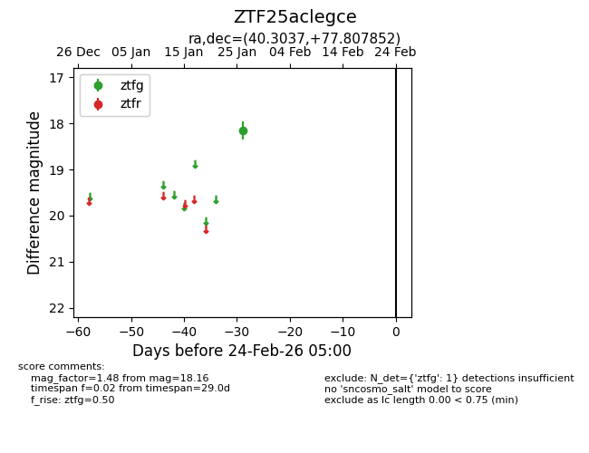
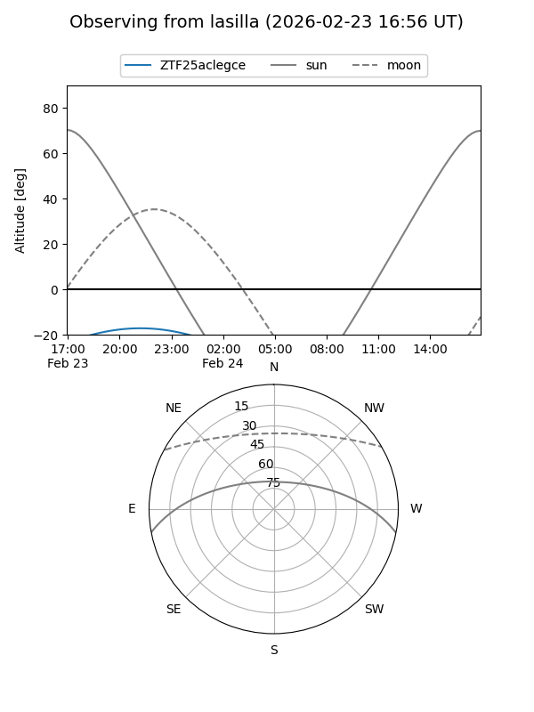
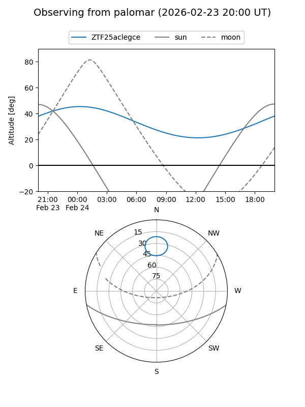

ZTF25aclegce
Target ZTF25aclegce at 2026-01-26 07:11
Aliases and brokers:
FINK: link
Lasair: link
ALeRCE: link
alt names
ZTF25aclegce (ztf,fink_ztf)
Coordinates:
equatorial (ra, dec) = 40.3037,+77.80785
equatorial (HMS+DMS) = 02:41:12.89,+77:48:28.27
galactic (l, b) = (128.7492,+16.19423)
Flags:
Photometry:
last ztfg=18.16
1 ztfg detections
Lightcurve

Visibility


Additional plots